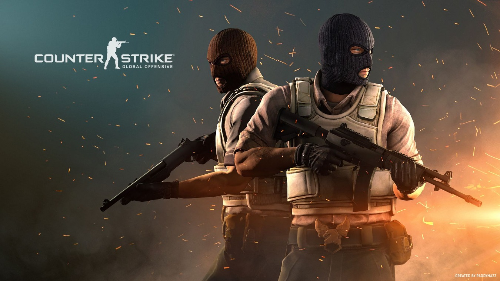

Counter-Strike isn't just a game, it's a phenomenon. Originally created by a couple of college students as a downloadable mod for Valve's pioneering 1998 PC first-person shooter, Half-Life, Counter-Strike has more than outlived the game on which it was based and remains one of the most widely played online games in the world, despite being based on 5-year-old technology. Why did Counter-Strike take the world by storm? For one thing, it was free and piggybacked a game that had a huge installed base. But, more importantly, it combined realistic kill-or-be-killed gunplay in a highly competitive, team-oriented environment that featured an incredibly fast, perfectly tuned, arcadelike pace. Much like the way Street Fighter II pioneered the fighting game but was never truly surpassed, so will Counter-Strike remain the once and future king of team-based shooters. Now Microsoft, in partnership with Valve, has brought Counter-Strike to the Xbox, where it's no longer free and no longer as responsive, but, in other respects, is largely the same game as the PC version. It's a bare-bones product that's a missed opportunity, offering no compelling reasons to make it recommendable over the PC version, except to someone with an Xbox Live account and a completely outdated PC. On its own merits, it can make for some good fun online, but if you've never experienced Counter-Strike before, this new version may cause you to wonder what, exactly, all the fuss is about.
The mechanics and the pace of Counter-Strike are essentially intact here, and some new maps and the option to play with or against computer-controlled bots are the main, new attractions. The rules of the game are the same as ever. You'll participate in a series of brutal rounds, from the perspective of either a counter-terrorist (CT) or a terrorist (T), each attempting to thwart the other. Two types of mission objectives are available: demolition and hostage rescue. In the former, the Ts attempt to drop a bomb at a particular point and then try to defend it for a number of seconds before it goes off; the CTs can win by defusing the bomb and, thus, defeating the Ts. In the latter, the CTs must locate a pack of hostages and lead them to safety, but the Ts don't want that to happen. Either mission type has a popular alternate objective: Kill everyone on the opposing side.
Ironically, the biggest competition that this Xbox version of Counter-Strike faces is from itself. In particular, the new Counter-Strike must compete against the aging PC version of Counter-Strike that's still free, still widely played, and still runs faster than ever on today's average system. Meanwhile, judged solely on its own merits or against standards established by other Xbox shooters, this game has a very limited variety of modes of play (including barely any single-player component to speak of) and contains underachieving production qualities that will disappoint those expecting anything more than just a port of an old PC shooter. Despite all that and despite the suboptimal controls for a game demanding of down-to-the-pixel precision, the gameplay of Counter-Strike still shines through as a finely tuned combination of addictive arcade action and deeply strategic teamwork. It's too bad, though, that the underlying high quality of the gameplay isn't more readily apparent.